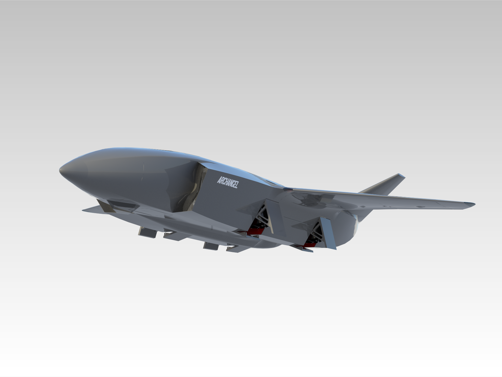
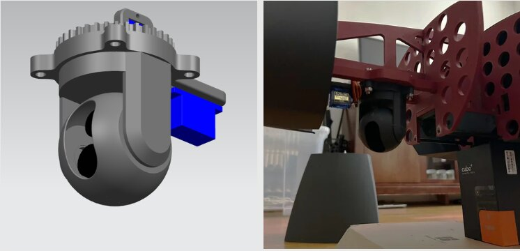
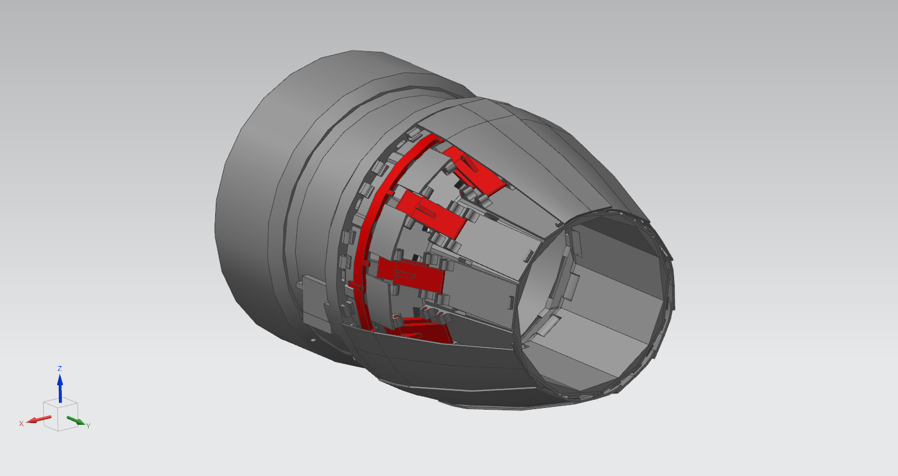
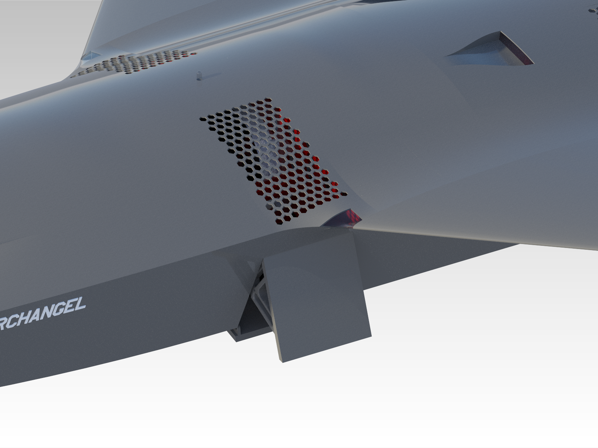
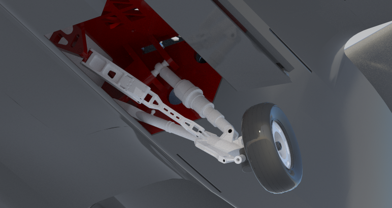
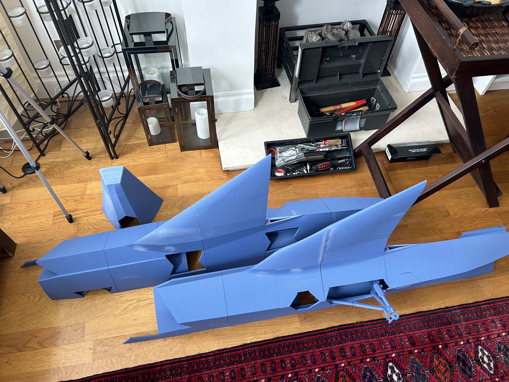
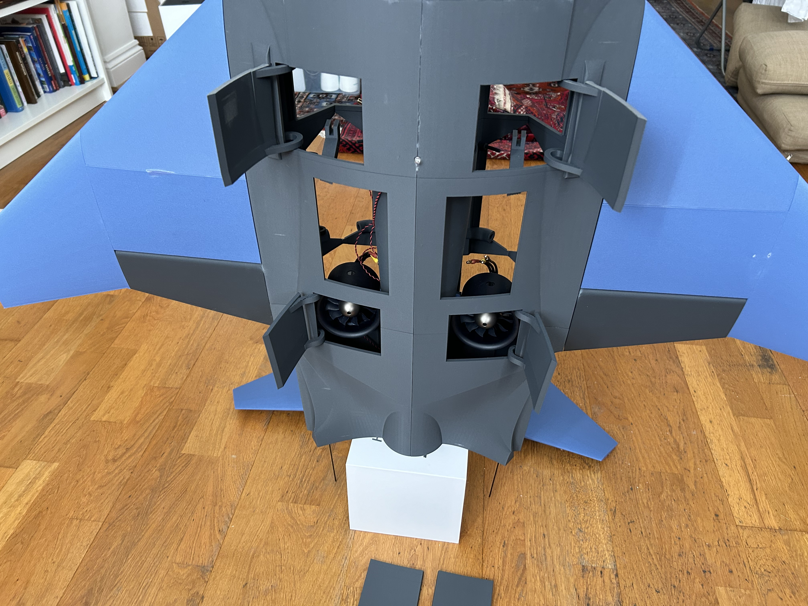
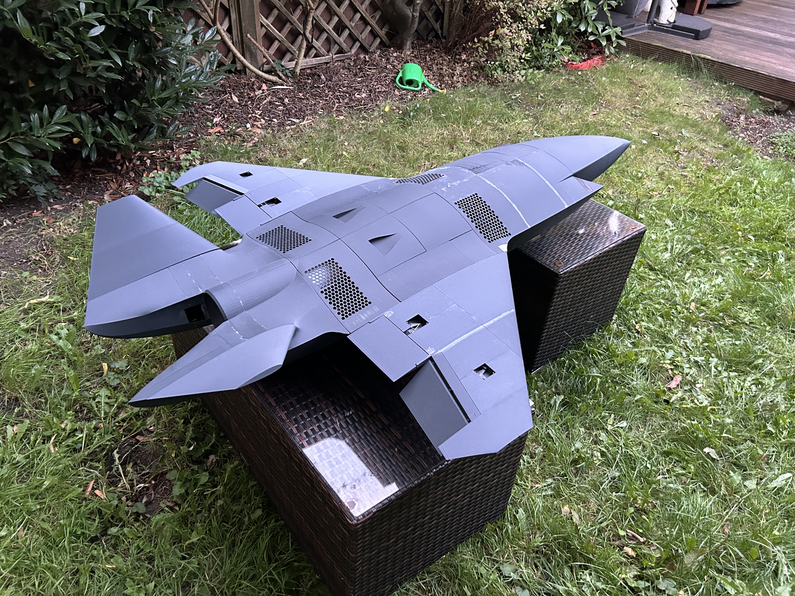
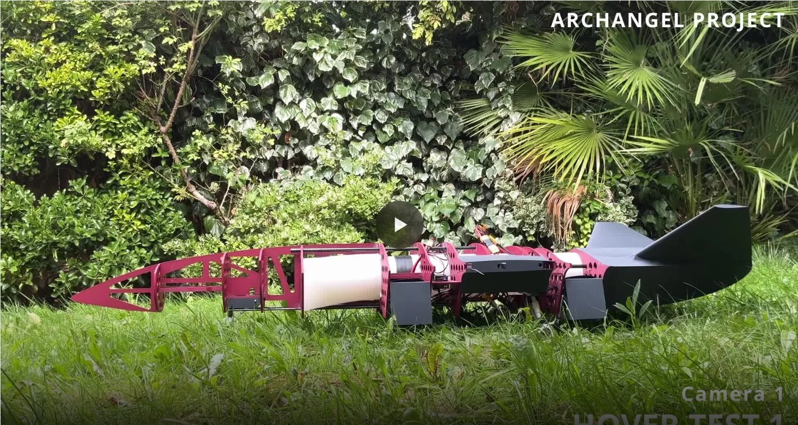
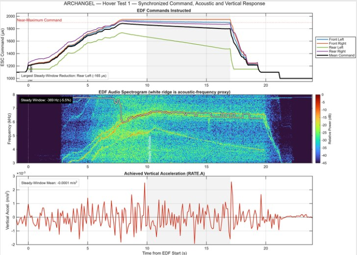

VTOL + forward flight
Integrate lift EDFs without sacrificing the external aerodynamic configuration or access to critical hardware.
Independent Aircraft-Development Project · 2023 – Present
A self-directed VTOL/CTOL aircraft programme developed through five major design iterations, three manufactured airframes and six full-system hover trials.

An end-to-end exercise in aircraft design, system integration, practical manufacture and evidence-led failure investigation.
ARCHANGEL began as an attempt to combine the agility and compact packaging of a fighter-like airframe with embedded electric VTOL propulsion, autonomous-flight hardware and removable mission systems. I owned the project from requirements and configuration design through CAD, analysis, component selection, manufacture, integration and testing.
The project deliberately brought propulsion, structures, aerodynamics, avionics and mechanisms into the same packaging problem.
Integrate lift EDFs without sacrificing the external aerodynamic configuration or access to critical hardware.
Package CubePilot, sensors, power distribution and redundant control paths into a constrained airframe.
Develop a detachable visible-light and infrared camera turret with independent pan and tilt.
Explore a variable-area thrust-vectoring nozzle, moving control surfaces, doors and retractable landing gear.
Each revision addressed a different limiting factor, from geometric feasibility to mass, packaging, assembly and test behaviour.
Established a low-observability-inspired fighter aircraft configuration and assessed how lift propulsion, forward thrust and control surfaces could coexist.
Moved from external concepts toward an integrated airframe with internal ducts, avionics volumes and mechanical systems.
Proved large-format additive manufacture, but excessive wall thickness and weak tolerance planning produced a roughly 10 kg system.
Improved mechanisms and internal access while revealing further interference, discontinuity and assembly constraints.
Reduced tested mass to approx. 8 kg, removed one lift EDF and produced the most complete integrated prototype.
The mechanisms were valuable not only as hardware, but as lessons in part count, tolerance, maintenance access and design simplification.

A removable two-axis reconnaissance turret using independent geared pulley systems for pan and tilt.

A servo-driven segmented nozzle intended to combine directional thrust control with variable exhaust area.

Lift EDFs, intake meshes, doors, controllers and electrical distribution were packaged into the centrebody while preserving the outer mould line.

All-moving V-tail surfaces, retractable landing gear and flap/door concepts were integrated alongside the propulsion system.
Practical build constraints repeatedly changed the design more than the original CAD assumptions did.

The first complete printed airframe proved the build approach, while exposing excessive wall mass and insufficient tolerance planning.

Revised mechanical systems improved movement and packaging but showed the cost of constrained access and over-complex mechanisms.

Interlocking components and revised propulsion produced the most complete test aircraft, though bonded construction still limited maintenance.
Six unsuccessful trials were synchronised with flight-controller logs, video and audio to separate visible symptoms from plausible causes.

Repeated rapid pitch-up and loss of sustained vertical response showed that the aircraft lacked the thrust and control margin required for a stable hover.

EDF commands, acoustic frequency, acceleration and sensor-health data revealed asymmetric command behaviour, a measurable acoustic drop and severe magnetic inconsistency.
ARCHANGEL did not meet its flight objective. It did demonstrate the ability to take a difficult, multidisciplinary idea into hardware, confront its limitations honestly and convert failed tests into specific design rules.
A lower-mass follow-on concept is being evaluated around disassemblable modules, independent propulsion units and a hover-first verification plan. It will become a separate case study once the CAD and quantitative trade study are mature.